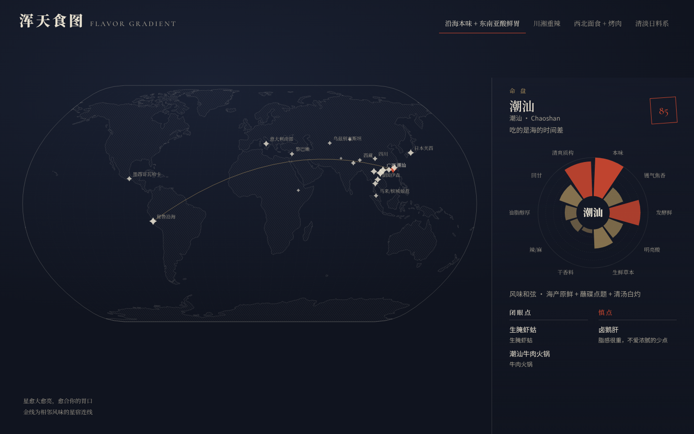
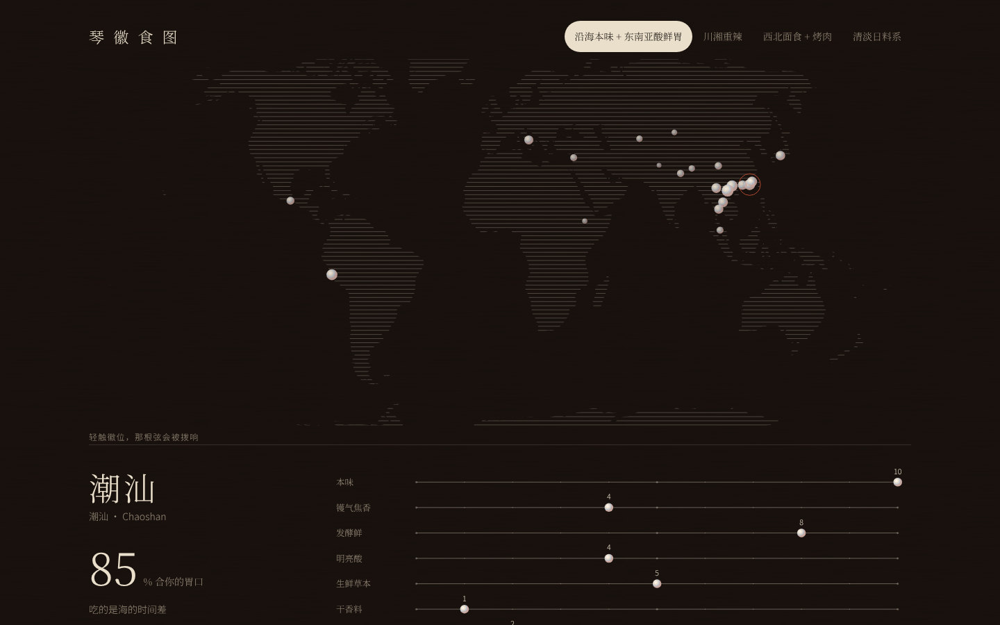
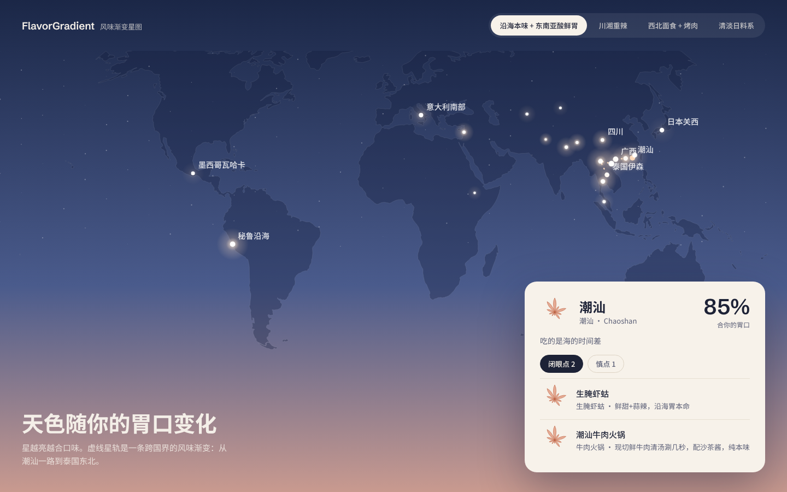

三版用的是同一份真实数据：21 个地区，4 种胃口。点开每一版都能直接操作：切换胃口、点地图上的点、悬停看动效。

参照杉浦康平的宇宙图：靛墨底，配骨白细线和朱砂、旧金两色。地图画成星图，每个地区是一颗四芒星，相邻的风味用金线连成星宿。详情是一张「命盘」，十个风味维度在圆上展开。
动效：悬停时这个地区的星宿亮起来；点开后命盘的花瓣逐片展开。
打开原型
古琴漆面：暖漆黑底，陆地用横向丝弦织出来，各地区是螺钿徽位。详情是十根弦，每根弦代表一个风味维度，徽位标出这一维的数值。
动效：悬停徽位，那一带的弦会被拨响；切换地区时，十根弦上的徽位一起滑到新位置，弦随之颤动。
打开原型
黄昏天幕：蓝调到暮粉的渐变，星星刚开始亮。切换胃口时天色跟着变；详情是一张浮在上面的浅色卡片，可读性最好，也最轻。
动效：星光呼吸，走廊画成流动的星轨，卡片内容依次浮入。
打开原型